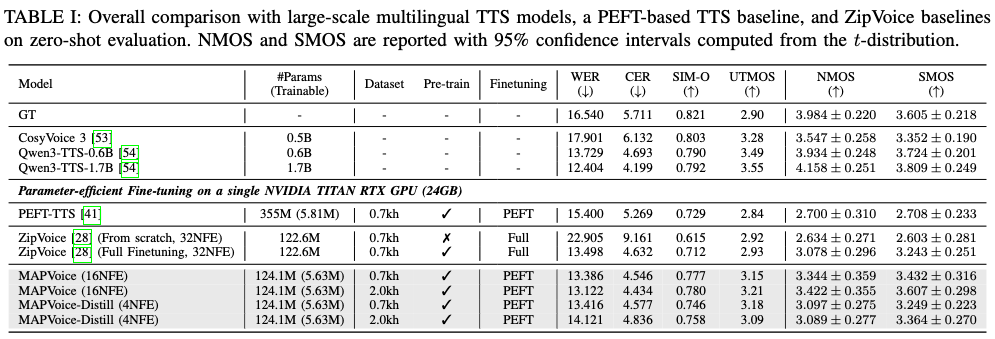
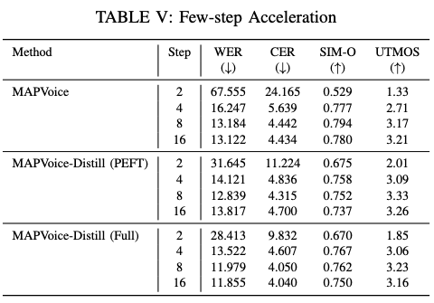

Abstract
Cross-lingual adaptation of large-scale pre-trained text-to-speech (TTS) models aims to extend speech synthesis to a target language with limited target-language data while preserving zero-shot synthesis capability. Although parameter-efficient fine-tuning (PEFT) enables adaptation with few trainable parameters, generic PEFT designs may be suboptimal for generative TTS models because they overlook the distinct roles of architectural components. In this paper, we propose MAPVoice, a multi-adapter parameter-efficient framework for cross-lingual zero-shot TTS. MAPVoice keeps the pre-trained backbone frozen and introduces two complementary modules: Shared Attention LoRA for global contextual adaptation and Conv-Adapter for local acoustic modeling. We systematically analyze how adapter insertion sites and module combinations affect cross-lingual adaptation in a flow-matching-based TTS model. We further show that ODE sampling can be accelerated by updating only PEFT modules, reducing sampling steps and eliminating the overhead of explicit classifier-free guidance. Experimental results show that MAPVoice effectively adapts the pre-trained TTS model to the target language while updating only a small fraction of parameters, and Parameter-Efficient Flow Acceleration further improves inference efficiency without updating the full student model. MAPVoice adapts the pre-trained model by updating only 4.5% of the total parameters, while Parameter-Efficient Flow Acceleration provides a 7.10× inference speedup.
Main comparison
Cross-Lingual Zero-Shot TTS
Each sample uses the same reference utterance and target text across all systems. Headphones are recommended.

Efficient sampling
Flow Acceleration
Parameter-Efficient Flow Acceleration reduces ODE sampling cost while keeping the full pre-trained student backbone frozen, providing a 7.10× inference speedup.
